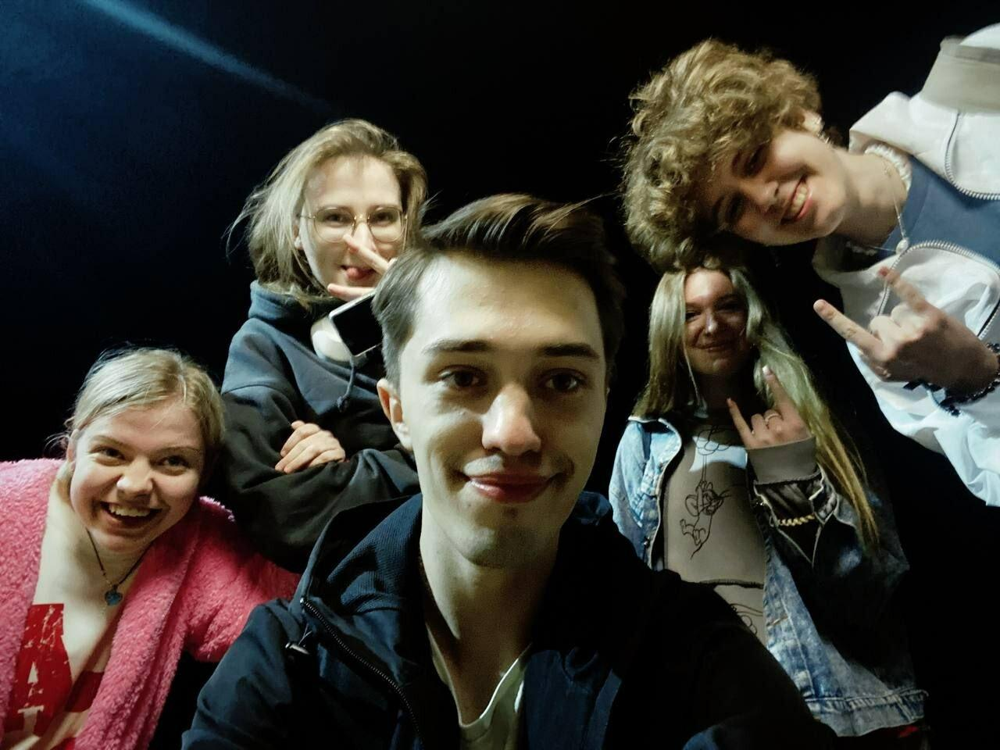
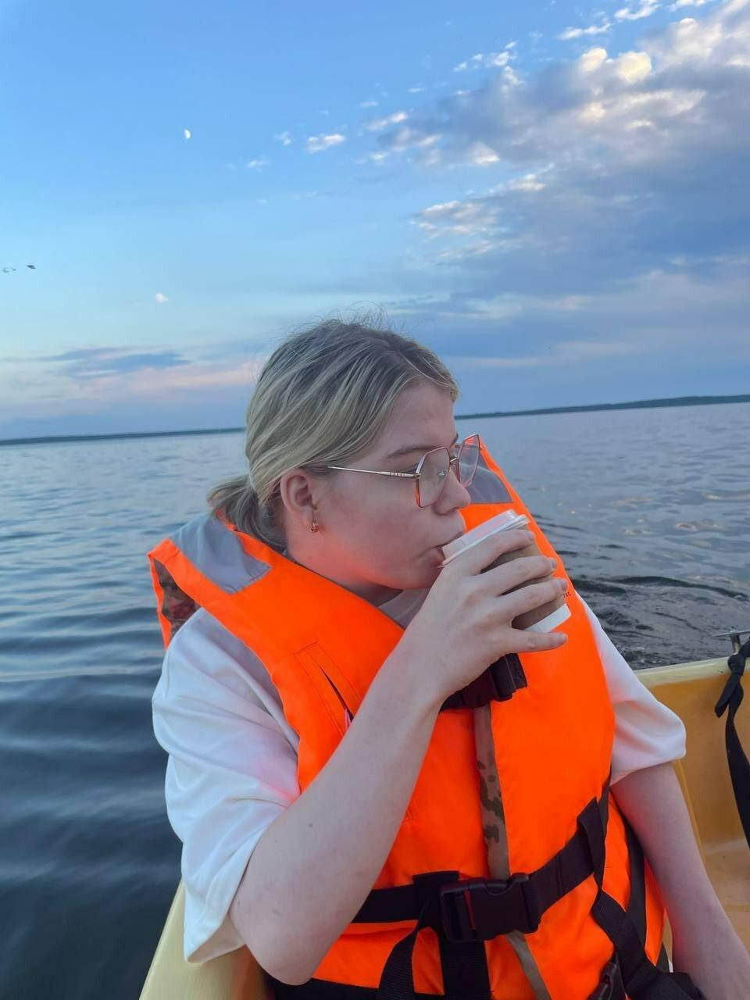
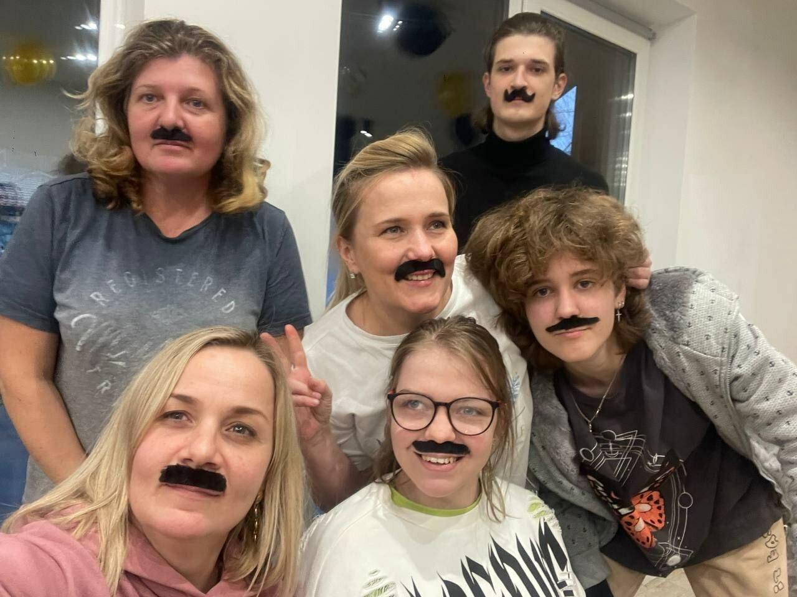
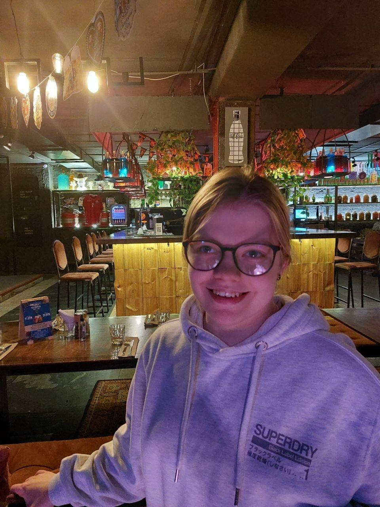
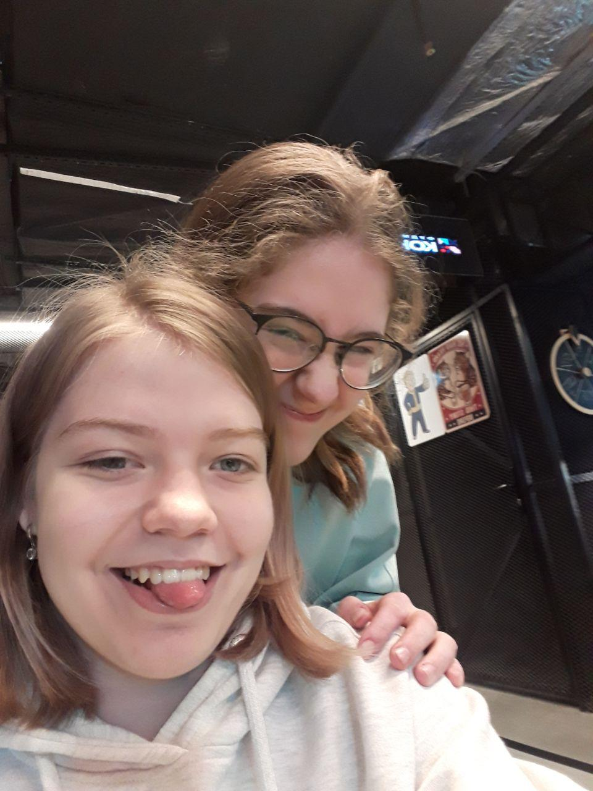
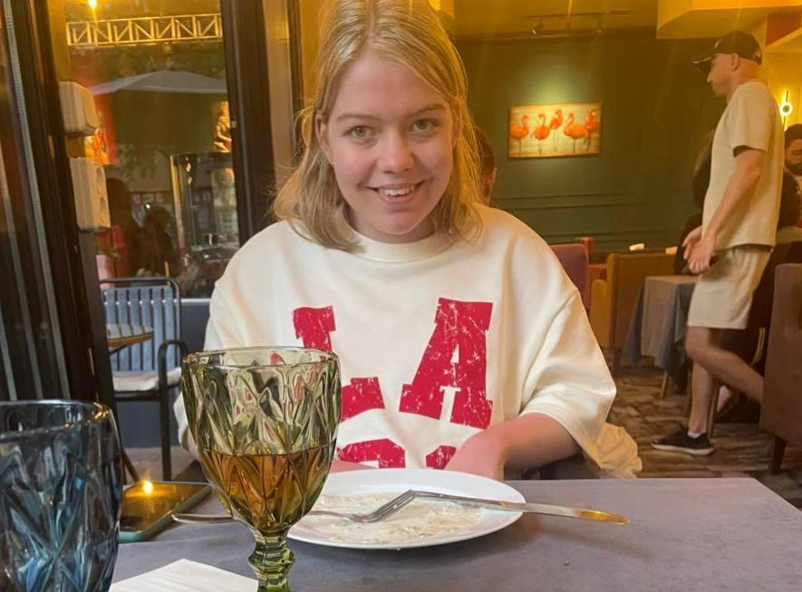

Несмотря на то, что мы далеко друг от друга, ты всегда найдёшь время просто написать «как ты?» и этим уже сделаешь день лучше.
Просто потому, что мы можем обсуждать всякую ерунду — от погоды до того, какой чай сегодня пили, — и от этого день вдруг кажется уютнее и добрее.
Знать, что есть человек, который не отмахнётся, а просто скажет «расскажи мне», — это огромная редкость и огромная ценность. Для меня ты именно такой человек.
Ты умеешь разложить всё по полочкам и сказать ровно то, что нужно услышать, даже если это непросто.
Ты научила меня замечать красоту в обычных вещах: в запахе свежего хлеба, в луже после дождя, в смешной кошке в интернете.
Иногда самое правильное — это отправить сердечко или смайлик, и ты это умеешь.
Наши общие шутки, истории, неловкие моменты — всё это в надёжных руках. И это бесценно.
Твоя энергия, твои идеи, твой взгляд на жизнь — это как солнце, которое светит даже в самые пасмурные дни.





